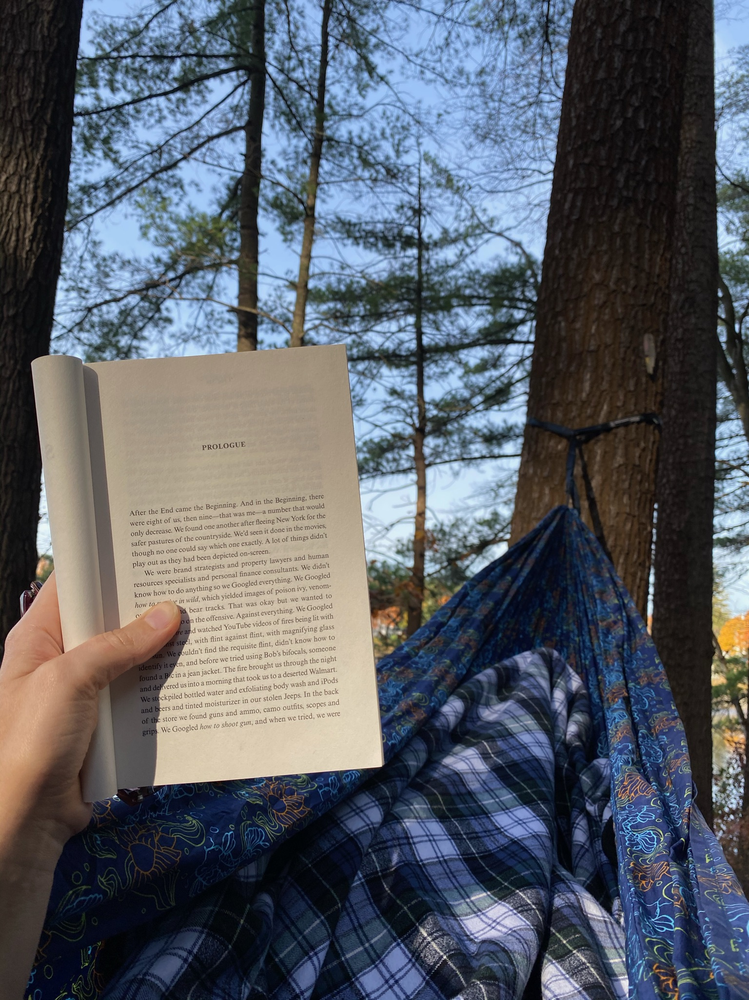
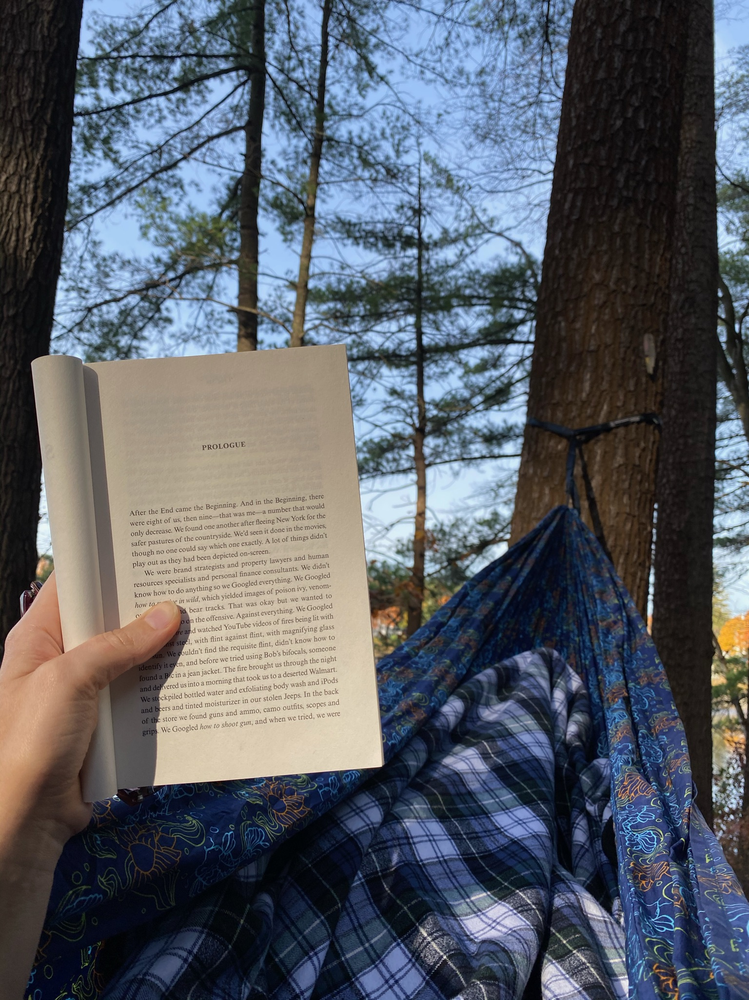

Distance
Distance Elevation
Elevation Observed Wildlife
Observed WildlifeThis is a terrific bang for your buck hike. A steady climb over two miles brings you to an awesome view of the Sandwich Range. There are ample places to enjoy a packed lunch even on a crowded day. There is also a, somewhat obstructed, view of the lake's region.


My partner and I got an early start on this absolutely gorgeous November day. The high in the Boston area was around 70 and we hoped to get in an early hike so that we could hammock in the afternoon. This shorter hike would allow us to finish before noon. We were the first car at the Mead Explorer Base Camp and on the trail by 7:20am.


The trailhead was to the left of the building; a few signs made it easy to find. The trail was uphill from the start so we quickly layered down to t-shirts and shorts amid the unseasonably warm morning. All the leaves were down and, after a bit of climbing, we could see through the branches to the fields below. We encountered some old rock walls and a small section of nicely built staircase, which seemed a bit out of place. The climb continued steadily and we heard some ruffed grouse.


We reached the first, south-facing lookout just over an hour into our hike. It was a lovely little opening in the trees and a slab of rock provided a nice place to sit and enjoy a snack in the sun. The view was a bit disappointing since the evergreen trees blocked much of the view below. My best pictures were only attained by holding my camera high above my head. Much better views awaited.


The most challenging, yet manageable, part of the trail was immediately after this lookout and required a bit of scrambling. It only lasted a hundred feet or so and ended with a much more level trail amid the beauty of lower boreal forest. I truly love this part of hikes in the Whites which contains a completely different feel from the hardwood forests below. The green of the trees was especially refreshing above the barren trees below.

We emerged into the first north-facing views looking out at the Sandwich Range. We were also treated to a bendable tripod someone had left in a tree. I loved looking out over all the places I’d hiked during the course of the year (west to east): Welsh Dickey, Flat Mountain Pond, the Tripyramids, Passaconaway, Whiteface, Paugus, and Chocorua. This view was fantastic, but we didn’t linger too long in order to reach the real summit.


Another quick jaunt through the boreal forest brought us to the opening of the real summit which is clearly marked with a small cairn. The views here were the best of the day. We could clearly see over Waterville Valley to Moosilauke, the Kinsmans and more in addition to the entire Sandwich Range. We were alone, but even on a crowded day there is plenty of open rock to spread out. We enjoyed some Sandwich Range sandwiches while sitting and looking at the beautiful mountains.


We began our return and were quickly interrupted by my partner taking a little tumble. Fortunately she didn’t injure herself, but she did have a nasty scrape on her knee which required some treatment. After that, we stopped at each of the two lookouts and passed group after group on our descent. We returned to the parking lot at 11:30am to a group of women celebrating the election results that had just been announced.

Beede Falls was only a short drive and hike away, but we decided to pass it up on this day. The windows were down on our return drive and we had a couple hours to take in the rest of the warm evening in our hammock along the Merrimack River at Mosley Woods in Newburyport, MA.

 
